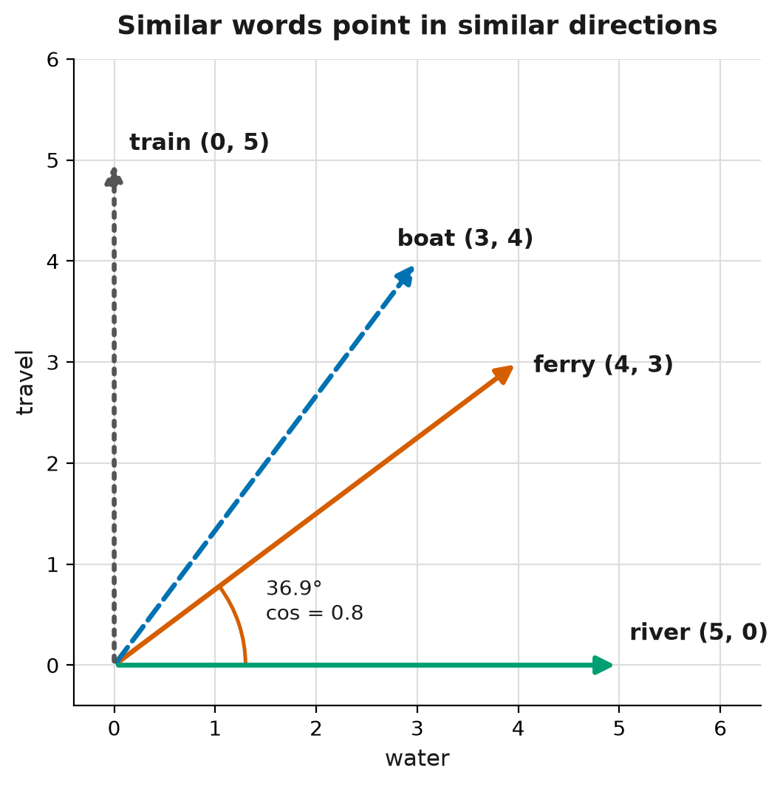

Vectors, Matrices and Similarity
Learning objectives
By the end you will be able to:
- Compute a dot product, a vector's length and the cosine similarity of two vectors, by hand and in NumPy.
- Compute a matrix–vector product and explain it as "many dot products at once".
- Compare dot product, cosine similarity and Euclidean distance, and choose one for a task.
- Explain why representing meaning as a vector works, and where the idea has limits.
Why this matters
Every generative model you meet in this catalog runs on vectors. A language model turns each token into a vector, mixes vectors together in every layer, and turns a final vector back into probabilities for the next token. Semantic search, retrieval-augmented generation and recommendation all rank items by vector similarity.
Small misunderstandings here cause real bugs later: comparing vectors with a dot product when their lengths mean nothing, mixing up a matrix's rows and columns, or reading a cosine of 0.3 as "barely related" without knowing what scale the model uses (in 768 dimensions, random vectors almost never get that close). This lesson gives you the handful of operations you need, with numbers small enough to check by hand.
🟢 Core idea (everyone)
A vector is a list of numbers with a meaning for each position
A vector is an ordered list of numbers. Each position holds one feature, and the number of
positions is the vector's dimension. The vector [4, 0, 3] has dimension 3.
Suppose you describe some words from the town of Brindlewick with three features: how much each word has to do with water, with books, and with travel, on a scale from 0 to 5.
| Word | water | books | travel | Vector |
|---|---|---|---|---|
| ferry | 4 | 0 | 3 | [4, 0, 3] |
| boat | 3 | 0 | 4 | [3, 0, 4] |
| river | 5 | 0 | 0 | [5, 0, 0] |
| train | 0 | 0 | 5 | [0, 0, 5] |
| museum | 0 | 4 | 3 | [0, 4, 3] |
| library | 0 | 5 | 0 | [0, 5, 0] |
You can also picture a vector as an arrow from the origin (the point where every feature is 0) to the point those numbers describe. Four of these words have 0 for "books", so they lie flat on the water–travel plane and can be drawn exactly:

Ferry and boat point in nearly the same direction; ferry and train are further apart; the angle between ferry and river is 36.9°.
The picture shows the key idea: words with similar meanings point in similar directions. "Ferry" sits between "river" and "boat" because a ferry is about both water and travel.
An analogy. Think of each vector as a recipe: so much water, so much books, so much travel. Two dishes made from the same ingredients in similar proportions taste alike, even if one is a double batch.
Where the analogy breaks down: a recipe's ingredients have names you chose. The vectors in a real model are learned from data, have hundreds or thousands of positions, and most positions have no meaning a person can name. The arithmetic below works the same either way.
The dot product: multiply and add
The dot product of two vectors of the same dimension multiplies matching positions and adds the results. For ferry and river:
A large dot product means the two vectors have big values in the same places. If one vector is 0 wherever the other is not, the dot product is 0: ferry · library = 4 \times 0 + 0 \times 5 + 3 \times 0 = 0.
Length, and why it gets in the way
A vector's length (also called its norm) is the length of its arrow. In two or three dimensions, it's Pythagoras: square each entry, add them up, take the square root.
The dot product grows with length. A document that mentions ferries twice as often might have
the vector [8, 0, 6]: same direction as ferry, twice as long. Its dot product with river
doubles to 40, though it's no more "about rivers" than before. Often you want to compare
directions only.
Cosine similarity: compare directions, ignore length
Cosine similarity divides the dot product by both lengths:
The result is the cosine of the angle between the two arrows (the angle in the diagram is 36.9°, and \cos 36.9° = 0.8). It always lies between −1 and 1:
| Cosine | Angle | Meaning |
|---|---|---|
| 1 | 0° | Same direction |
| 0 | 90° | Unrelated: no shared direction (perpendicular, at right angles) |
| −1 | 180° | Opposite directions |
Here is every word compared with ferry. All these vectors have length 5, so each cosine is just the dot product divided by 25:
| Word | Dot product with ferry | Cosine similarity |
|---|---|---|
| ferry | 25 | 1.000 |
| boat | 4 \times 3 + 3 \times 4 = 24 | 0.960 |
| river | 20 | 0.800 |
| train | 15 | 0.600 |
| museum | 9 | 0.360 |
| library | 0 | 0.000 |
That ranking matches intuition: boats are most like ferries, libraries least. In this toy, no cosine is negative because no feature is negative. Learned vectors use negative numbers freely, so negative cosines are common there.
A matrix is a stack of vectors
A matrix is a rectangular grid of numbers: rows and columns. Stack the six word vectors as rows and you get a matrix with 6 rows and 3 columns, called a "6 by 3" matrix. Its shape is written (6, 3).
Multiplying that matrix by the ferry vector computes the dot product of ferry with each row, giving six numbers: exactly the "dot product" column above. That operation is the matrix–vector product, and it's the workhorse of AI. A search engine compares one query vector with millions of stored vectors this way. A neural network layer multiplies its input vector by a matrix of learned numbers, in every layer, for every token.
Why "meaning as a vector" works
The idea goes back to linguists in the 1950s, under the name distributional hypothesis: words that appear in similar contexts tend to have similar meanings. "Ferry" and "boat" both appear near "river", "crossing" and "dock". J. R. Firth put it in 1957 as "You shall know a word by the company it keeps."
Modern models learn vectors so that words used in similar ways get similar vectors. Nobody chooses the features: training adjusts the numbers until similar usage means similar direction. L2-02 trains vectors like this. This lesson uses hand-made features only so that you can check every number.
🟡 How it works (practitioner)
The three operations in NumPy
code/word_vectors.py computes everything from the core section twice: first with plain Python loops, so you can see each step, and then with NumPy.
def cosine(a: np.ndarray, b: np.ndarray) -> float:
return float(a @ b / (np.linalg.norm(a) * np.linalg.norm(b)))
a @ bis the dot product. NumPy also hasnp.dot(a, b), which gives the same answer for vectors.np.linalg.norm(a)is the length.
Run it from this lesson's folder:
python code/word_vectors.py
ferry = [4, 0, 3]
river = [5, 0, 0]
dot(ferry, river) by hand: 20 with NumPy: 20
length(ferry) by hand: 5.0 with NumPy: 5.0
cosine(ferry, river) by hand: 0.8 with NumPy: 0.8
cosine similarity to "ferry":
ferry 1.000
boat 0.960
river 0.800
train 0.600
museum 0.360
library 0.000
distance vs cosine for "ferry" and "harbour" = [8, 0, 6]:
dot 50 cosine 1.000 euclidean distance 5.000
Matrix–vector products, step by step
code/matrix_vector.py stacks the six vectors into a matrix W and
scores them all against a query in one line:
scores = W @ query # shape (6, 3) @ shape (3,) -> shape (6,)
The rule for shapes: the number of columns of the matrix must equal the dimension of the vector. The result has one entry per row. Entry i is the dot product of row i with the vector:
Here W is a matrix with m rows and n columns, \mathbf{x} is a vector of dimension n, W_{ij} is the number in row i and column j, and \sum_{j=1}^{n} means "add up the terms for j = 1, 2, \ldots, n".
W has shape (6, 3): 6 words, 3 features each
query "ferry" has shape (3,)
W @ query has shape (6,): one score per word
dot products: [25. 24. 20. 15. 9. 0.]
after normalizing: [1. 0.96 0.8 0.6 0.36 0. ]
a 2 x 3 matrix that mixes features into 2 new ones:
M = [[1 0 0]
[0 1 1]]
M @ ferry = [4 3]
M @ museum = [0 7]
Two things in that output are worth slowing down for.
Normalizing makes the dot product a cosine. Dividing a vector by its own length gives a
unit vector: same direction, length 1. If you normalize every row of W and the query once,
up front, then W @ query returns cosine similarities directly, with no division per pair. Search
systems store normalized vectors for exactly this reason.
A matrix can transform a vector. The second part reads the matrix–vector product the other
way: each output entry is a weighted mix of the input features. The matrix M keeps "water"
as it is and adds "books" and "travel" together into a single new feature. M turns a
3-dimensional vector into a 2-dimensional one. A neural network layer does exactly this, with
weights that are learned instead of chosen (L1-07).
Distance or similarity?
The Euclidean distance between two vectors is the length of the arrow from one tip to the other: subtract them, then take the length. It answers "how far apart are the points?", which isn't the same question as "do they point the same way?":
| Measure | Formula, in words | Same direction, different length | Typical use |
|---|---|---|---|
| Dot product | Multiply matching entries, add | Grows with length | Inside models (attention scores, layers); search when length carries meaning |
| Cosine similarity | Dot product ÷ both lengths | Equal to 1 | Comparing meaning when length is noise, such as text of different lengths |
| Euclidean distance | Length of the difference | Large | Clustering and nearest neighbours when absolute position matters |
Ferry [4, 0, 3] and harbour [8, 0, 6] show the difference: cosine 1.000 (identical
direction), but Euclidean distance 5.000, which is as far apart as ferry is from the origin.
For unit vectors, the three measures agree on the ranking. The squared distance between unit vectors is 2 - 2 \times \text{cosine}, so the closest vector is always the one with the highest cosine. That's why many systems normalize first and then use whichever is fastest.
Common pitfalls
- Mismatched shapes.
W @ xneeds the columns ofWto match the length ofx. When it fails, print.shapeof both before anything else. - Rows versus columns. In this lesson, rows are items and columns are features. Some code stores them the other way round. Check which convention your data uses before multiplying.
- Dividing by zero. An all-zero vector has length 0, so its cosine is undefined. Real code checks for it or adds a tiny number to the denominator.
- Comparing vectors from different sources. Cosine similarity only means something if both vectors come from the same model. Position 7 in one model has nothing to do with position 7 in another.
- Integer surprises.
np.array([4, 0, 3])holds integers. Dividing gives floats, but assigning a float into an integer array silently truncates it: aftera[0] = 2.7,a[0]is 2. Usedtype=floatfor math.
🔴 Going deeper (expert)
Dot products as the universal comparison
In matrix notation, the dot product of column vectors \mathbf{a} and \mathbf{b} is \mathbf{a}^\top \mathbf{b} = \sum_i a_i b_i, where \mathbf{a}^\top is the transpose of \mathbf{a} (rows and columns swapped). Its geometric form is
where \lVert \mathbf{a} \rVert = \sqrt{\mathbf{a}^\top\mathbf{a}} is the length and \theta is the angle between the vectors. Cosine similarity is this equation solved for \cos\theta. The Cauchy–Schwarz inequality, |\mathbf{a}^\top\mathbf{b}| \le \lVert\mathbf{a}\rVert\,\lVert\mathbf{b}\rVert, is what guarantees the cosine stays between −1 and 1.
Scaled dot products are how a transformer's attention decides which earlier tokens to draw on (L2-04). Each token's "query" vector is dotted with every earlier token's "key" vector. The scaling there, dividing by \sqrt{d}, is related to the next section: dot products of random d-dimensional vectors with independent unit-variance entries grow like \sqrt{d}.
High dimensions behave strangely
Intuition from two and three dimensions can mislead you in 768. Run code/high_dimensions.py, which measures the cosine between 2,000 pairs of random vectors at each dimension:
dimensions average |cosine| 1/sqrt(d)
2 0.645 0.707
10 0.260 0.316
100 0.078 0.100
1,000 0.025 0.032
In high dimensions, random directions are almost perpendicular: the average absolute cosine shrinks like 1/\sqrt{d} (for large d it approaches \sqrt{2/(\pi d)}). Three consequences:
- Scores have no universal scale. A cosine of 0.3 between two random 1,000-dimensional vectors would be extraordinary, more than ten times the typical value. Whether 0.3 is "high" depends on the model and the data. Calibrate thresholds on your own data, never by intuition.
- There's a lot of room. A space with d dimensions has at most d exactly perpendicular directions, but exponentially many nearly perpendicular ones. Models can pack many more distinct concepts than dimensions. Interpretability research calls this superposition (Level 7).
- Learned vectors aren't random. Real learned vectors are often anisotropic (unevenly spread): most crowd into a narrow cone, so every pair has a fairly high cosine. Subtracting the average vector, or normalizing per dimension, is a common fix. How much it helps depends on the model, so measure it.
Cost, and why it drives system design
A matrix–vector product with an m \times n matrix costs m \times n multiplications and about as many additions. Comparing one query against 10 million stored vectors of dimension 768 is about 7.7 \times 10^{9} multiply–adds: fine once, too slow for every keystroke. That cost is the reason for approximate nearest-neighbour indexes (L3-07). A matrix–matrix product, m \times n times n \times p, costs m \times n \times p, which is why model training is dominated by matrix multiplication and why hardware for AI is built around it.
Meaning as geometry: what the evidence shows, and its limits
Learned word vectors famously show some linear structure: in the vectors from Mikolov and colleagues (2013), "king" − "man" + "woman" lands close to "queen". This is real but oversold. Later work showed that many such analogies only "work" because the search excludes the input words, and that results vary a lot by relation type. TODO(verify): cite the papers that showed this. Vectors also absorb associations from their training text, including social biases (Level 6). And one vector per word can't separate the meanings of "bank" (river) and "bank" (money). Transformers address that with contextual vectors that change with the surrounding words (Level 2).
Active research (as of November 2026): how much of a model's knowledge is stored as directions in vector space, and how cleanly concepts can be read out or edited along those directions, is studied under the name linear representation hypothesis. The evidence is strong for some concepts and weak for others.
Common misconceptions
- Myth: The numbers in a model's vectors each stand for a nameable feature, like "water" here. Reality: In learned vectors, individual positions rarely mean anything a person can name. Meaning lives in directions and in the relationships between vectors.
- Myth: A cosine similarity of 0 means two things are opposites. Reality: 0 means perpendicular: no shared direction. Opposite directions give −1.
- Myth: Dot product and cosine similarity are interchangeable. Reality: They agree only when every vector has the same length. Otherwise the dot product favours longer vectors.
- Myth: A matrix is just a table for storing numbers. Reality: It's also an operation. Multiplying by a matrix transforms a vector into a new one, and that's what neural network layers do.
Hands-on exercise
Goal: find every word's two nearest neighbours by cosine similarity, using one matrix product instead of a loop over pairs.
Open exercises/nearest_neighbours.py. The vocabulary has
grown to 8 words, with a fourth feature, "time". Complete cosine_matrix() and top_k(). Before
running, predict which two words form the most similar pair, and which word "clock" is closest to.
You've succeeded when the diagonal prints as all ones and each word's neighbours make sense.
Solution
The full solution is in exercises/solutions/nearest_neighbours.py. The key line normalizes the rows and multiplies the result by its own transpose:
unit = vectors / np.linalg.norm(vectors, axis=1, keepdims=True)
return unit @ unit.T
unit @ unit.T is an 8 × 8 matrix: entry [i, j] is the dot product of unit row i with unit
row j, which is their cosine. The diagonal is 1 because every word points exactly in its own
direction.
similarity matrix shape: (8, 8)
diagonal (each word with itself): [1. 1. 1. 1. 1. 1. 1. 1.]
ferry -> boat (0.94), river (0.78)
boat -> ferry (0.94), train (0.74)
river -> ferry (0.78), boat (0.60)
train -> timetable (0.84), boat (0.74)
museum -> library (0.80), timetable (0.76)
library -> museum (0.80), clock (0.38)
clock -> timetable (0.81), museum (0.51)
timetable -> train (0.84), clock (0.81)
most similar pair: ferry and boat (0.94)
Notice "timetable": it shares "travel" with train and "time" with clock, so it's close to both. That's the geometry of a word that bridges two topics. Also notice that "library" has no close neighbour except "museum": with only four features, a word's neighbours can only be as good as the features allow.
Check your understanding
- What is the cosine similarity of
[1, 2]and[2, 4]?C.
[2, 4]is exactly twice[1, 2], so both point in the same direction and the angle between them is 0°. Check: the dot product is 1 \times 2 + 2 \times 4 = 10, the lengths are \sqrt{5} and \sqrt{20}, and 10 / \sqrt{100} = 1. D is the dot product, not the cosine. - A matrix
Whas shape (1000, 64) and a vectorxhas shape (64,). Which statements are true? (choose all that apply)A, B, D. The 64 columns of
Wmatch the 64 entries ofx, so the product is valid and gives one number per row: 1,000 of them. C has the shapes backwards: the result has as many entries asWhas rows. - You are ranking support articles against a short question. Long articles mention more words, so their vectors are longer. Which measure stops long articles from winning only because they're long?
B. Cosine similarity divides out both lengths and compares direction only. The dot product (A) grows with length, which is the problem described. Length alone (C) ignores the question entirely.
- Compute the cosine similarity of museum
[0, 4, 3]and train[0, 0, 5], showing each step.Did your answer cover the main points?Dot product: 0 \times 0 + 4 \times 0 + 3 \times 5 = 15. Lengths: \sqrt{0 + 16 + 9} = 5 and \sqrt{25} = 5. Cosine: 15 / (5 \times 5) = 0.6. They share only the "travel" feature, so they're moderately similar, exactly as similar as ferry and train.
- Explain it to a colleague: your colleague asks, "How can a list of numbers possibly capture what a word means?" Answer in a few sentences, including one limit of the idea.Did your answer cover the main points?
A model gives each word a vector and adjusts the numbers during training so that words used in similar contexts end up pointing in similar directions. This works because, as linguists observed in the 1950s, words that keep similar company tend to have similar meanings. The vector doesn't define the word; it places it relative to every other word, and similarity is measured by the angle between vectors. One limit: a single fixed vector per word can't tell apart different senses, like a river bank and a savings bank, and vectors also pick up biases from their training text.
Key terms
Further reading
- 🟢 Essence of Linear Algebra — Grant Sanderson (3Blue1Brown, 2016). A short animated video series that builds geometric intuition for vectors, matrices and dot products. https://www.3blue1brown.com/topics/linear-algebra
- 🟡 Mathematics for Machine Learning — M. P. Deisenroth, A. A. Faisal and C. S. Ong (2020). Cambridge University Press. Chapters 2 and 3 cover linear algebra and geometry; the book is free online. https://mml-book.github.io/
- 🟡 18.06 Linear Algebra — Gilbert Strang. MIT OpenCourseWare. Full lecture videos and notes from a classic course. https://ocw.mit.edu/courses/18-06-linear-algebra-spring-2010/
- 🔴 Distributional Structure — Zellig S. Harris (1954). Word, 10(2–3), 146–162. A founding statement of the distributional hypothesis.
- 🔴 Efficient Estimation of Word Representations in Vector Space — T. Mikolov, K. Chen, G. Corrado and J. Dean (2013). Learned word vectors and the vector-arithmetic analogies. https://arxiv.org/abs/1301.3781
Next
- Next lesson: L1-02 Probability for Generative Models
- Related: L1-07 uses matrix–vector products as neural network layers. L2-02 trains word vectors from text. L2-04 builds attention from scaled dot products. L3-06 and L3-07 use cosine similarity for semantic search.